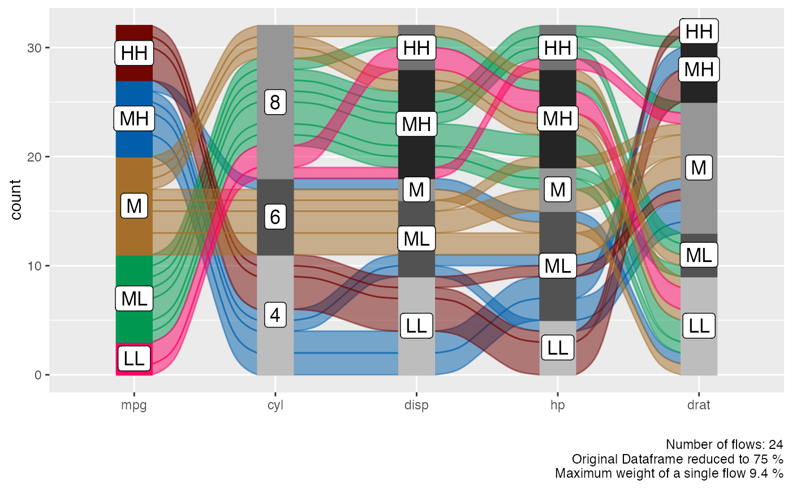
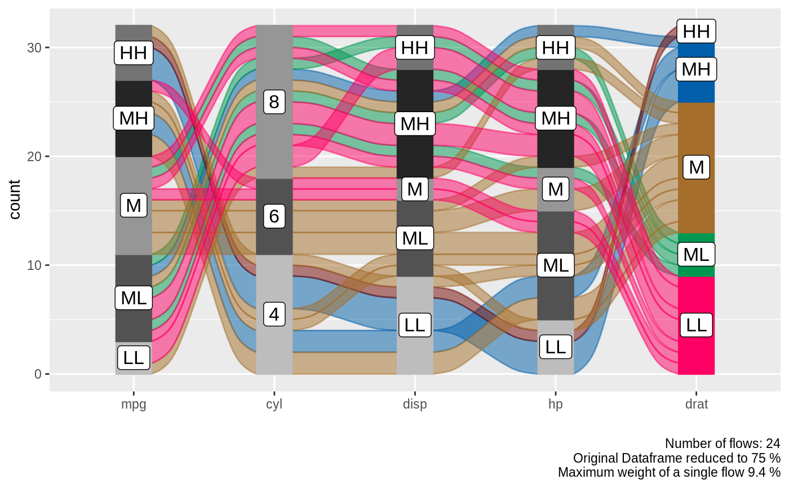
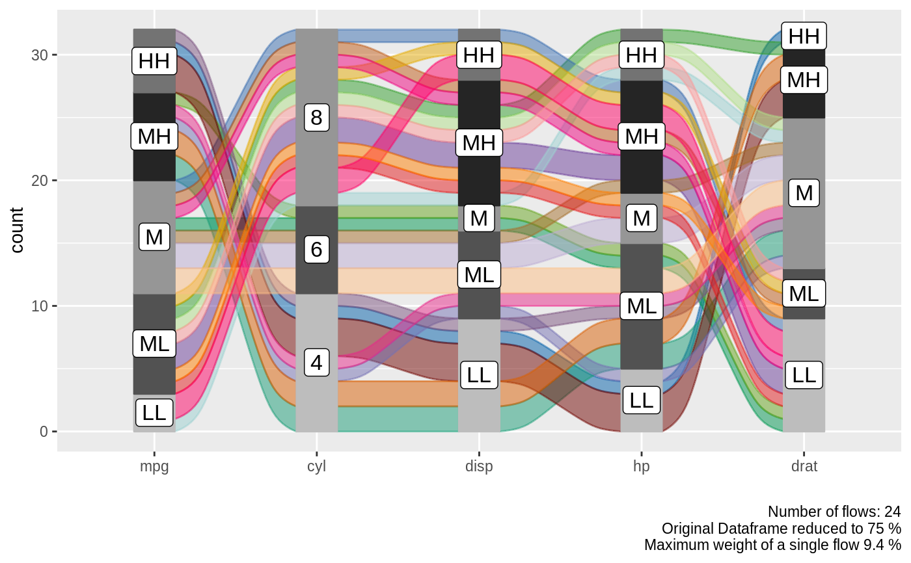
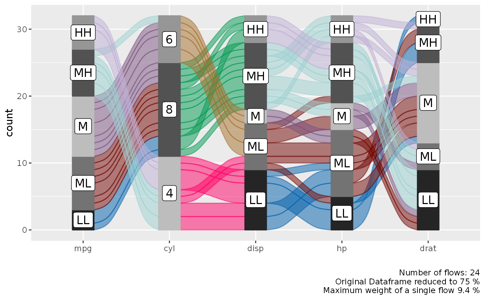

plots a dataframe as an alluvial plot. All numerical variables are scaled, centered and YeoJohnson transformed before binning. Plots all variables in the sequence as they appear in the dataframe until maximum number of values is reached.
alluvial_wide( data, id = NULL, max_variables = 20, bins = 5, bin_labels = c("LL", "ML", "M", "MH", "HH"), NA_label = "NA", order_levels = NULL, fill_by = "first_variable", col_vector_flow = palette_qualitative() %>% palette_filter(greys = F), col_vector_value = RColorBrewer::brewer.pal(9, "Greys")[c(4, 7, 5, 8, 6)], colorful_fill_variable_stratum = T, verbose = F, stratum_labels = T, stratum_label_size = 4.5, stratum_width = 1/4, auto_rotate_xlabs = T, ... )
| data | a dataframe |
|---|---|
| id | unquoted column name of id column or character vector with id column name |
| max_variables | maximum number of variables, Default: 20 |
| bins | number of bins for numerical variables, Default: 5 |
| bin_labels | labels for the bins from low to high, Default: c("LL", "ML", "M", "MH", "HH") |
| NA_label | character vector, define label for missing data, Default: 'NA' |
| order_levels | character vector denoting levels to be reordered from low to high |
| fill_by | one_of(c('first_variable', 'last_variable', 'all_flows', 'values')), Default: 'first_variable' |
| col_vector_flow | HEX colors for flows, Default: palette_filter( greys = F) |
| col_vector_value | Hex colors for y levels/values, Default: RColorBrewer::brewer.pal(9, "Greys")[c(3, 6, 4, 7, 5)] |
| colorful_fill_variable_stratum | logical, use flow colors to colorize fill variable stratum, Default: TRUE |
| verbose | logical, print plot summary, Default: F |
| stratum_labels | logical, Default: TRUE |
| stratum_label_size | numeric, Default: 4.5 |
| stratum_width | double, Default: 1/4 |
| auto_rotate_xlabs | logical, Default: TRUE |
| ... | additional arguments passed to
|
ggplot2 object
Under the hood this function converts the wide format into long format. ggalluvial also offers a way to make alluvial plots directly from wide format tables but it does not allow individual colouring of the stratum segments. The tradeoff is that we can only order levels as a whole and not individually by variable, Thus if some variables have levels with the same name the order will be the same. If we want to change level order independently we have to assign unique level names first.
alluvial_wide ,
geom_flow , geom_stratum
, manip_bin_numerics
alluvial_wide( data = mtcars2, id = ids , max_variables = 5 , fill_by = 'first_variable' )# \dontrun{ # more coloring variants---------------------- alluvial_wide( data = mtcars2, id = ids , max_variables = 5 , fill_by = 'last_variable' )alluvial_wide( data = mtcars2, id = ids , max_variables = 5 , fill_by = 'all_flows' )alluvial_wide( data = mtcars2, id = ids , max_variables = 5 , fill_by = 'first_variable' )# manually order variable values and colour by stratum value alluvial_wide( data = mtcars2, id = ids , max_variables = 5 , fill_by = 'values' , order_levels = c('4', '8', '6') )# }